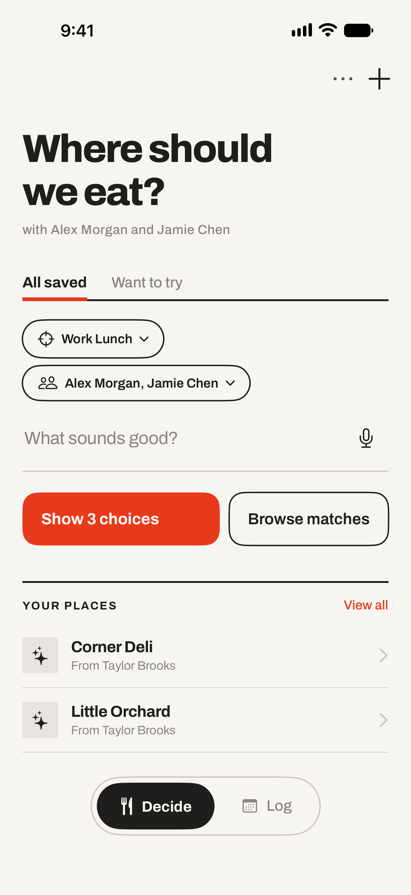
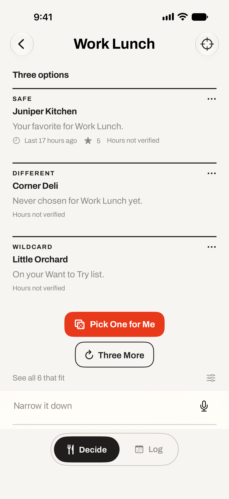
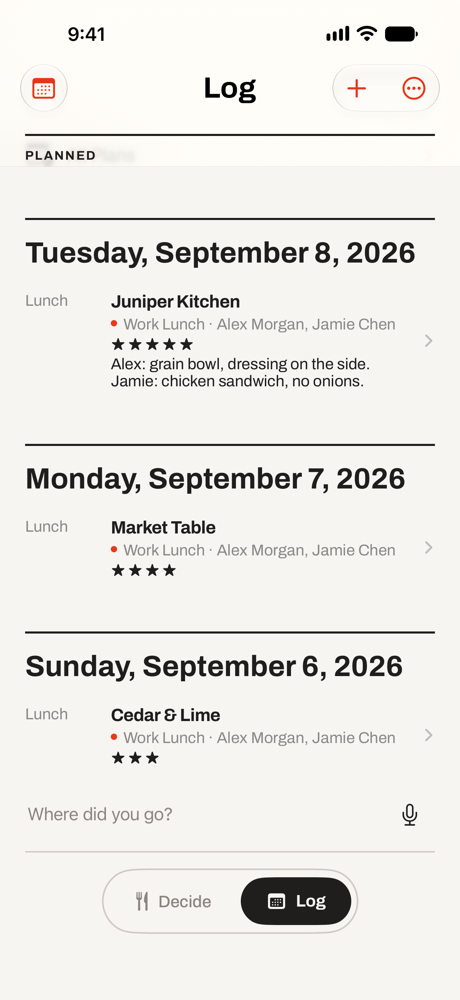
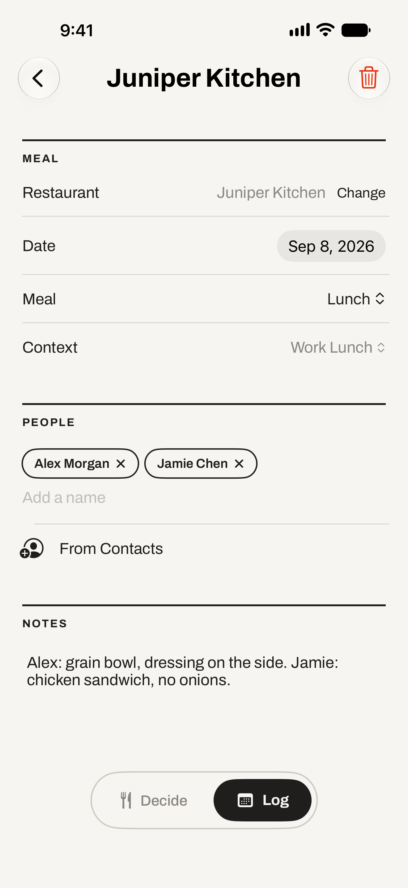

Remember your options
Save favorites and recommendations so they come to mind when you’re deciding. Keep who suggested each place, too.
Save your first place
Your places
Your people
Your next meal
Get suggestions from your favorites and places you’ve been meaning to try, based on what sounds good and who’s coming. Leave out the places they don’t like.

A little less “I don’t know. You pick.”
Save favorites and recommendations so they come to mind when you’re deciding. Keep who suggested each place, too.
Save your first placeChoose Work Lunch, Date Night, or another context. Add who’s joining so their restaurant dislikes stay out of the suggestions.
Set up your choiceSay what sounds good, like a burger or Thai food. Get three choices from your saved places, or browse every match.
Find your next mealYour context. Your people. Your places.
Work lunch and date night call for different choices. Keep places in contexts that fit the occasion, then choose who’s coming.
A friend has a place they’d rather skip? Add it to their do-not-recommend list. It stays out of the suggestions whenever they’re joining.
See how deciding works
Work Lunch · sample data · select image to enlarge

Work Lunch · sample data · select image to enlarge

After the decision
Remember the occasion, the company, and what you’d order again.
Alex: veggie burger, no onions.
Me: curry, extra spicy.
Visit notes are a simple place for orders, substitutions, and the things you’d like to remember. Find them again in your log or a restaurant’s history.
Find a past mealPersonal by design
Your collection lives on your device and uses your private iCloud storage when available. Choose what to share, and control what Siri and Spotlight can access.
Read the privacy policyStart tonight
Save a favorite or a place you’ve been meaning to try. One restaurant is enough to get started.
Join the TestFlight beta{kind=link}
{kind=link}